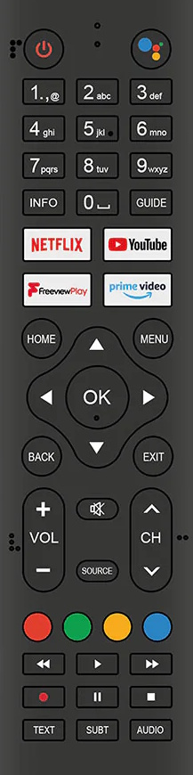

TV Remote Control Support
A selection of TV remote control keys are set to perform basic play and volume operations in addition to player shortcuts.

Different hardware has different remote controls and buttons available, if buttons are available then TVONOS will map them to the following operations.
Sonos Control
- Play/Pause/Stop - Track playing status
- Fast Forward/Skip Forward - Skips to the next track
- Rewind/Skip Previous - Skips to the previous track, or start of current track if part way through
- Channel Up/Channel Down - Change the volume on the Sonos Speaker
- Mute - Mutes the audio on the Sonos Speaker
TVONOS Shortcuts
- 1 - Launch Basic Controller
- 2 - Launch Slideshow
- 3 - Launch Biography
- 4 - Launch Lyrics
- Red - Launch Queue
- Green - Launch Playlists
- Yellow - Launch Favorites
- Blue - Launch Music Source